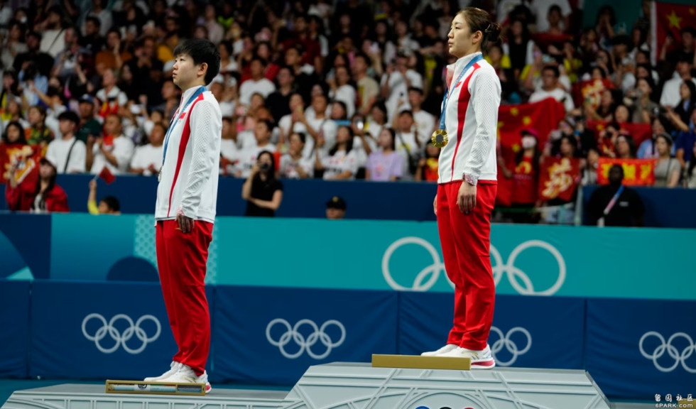

中国运动员陈梦在2024巴黎奥运会上获得乒乓球女子单打金牌。（2024年8月3日）
华盛顿 —
北京警方近日以“恶意编造信息、公然诋毁他人”的指控为由，拘捕一名29岁的北京女球迷。美联社指出，当局在巴黎奥运会期间出手整治中国体育界走火入魔的“饭圈文化”的意图相当明显。
北京警方称，目前有关这名女球迷的案件正在进一步侦办中。
北京市公安局大兴分局星期二（8月6日）晚在官方微博发布通报，声称近日“接群众举报”，有人在巴黎奥运会乒乓球女单决赛后在微博平台发布诋毁运动员和教练员信息。
“对此，警方迅速开展调查，将犯罪嫌疑人贺某某（女，29岁）抓获，”警方的通报说。
巴黎奥运会乒乓球女单决赛8月3日在两名中国运动员之间展开，由上届东京奥运会乒乓球女单金牌得主陈梦对战世界排名第一的另一名中国运动员孙颖莎，比赛结果陈梦以4比2战胜孙颖莎，再次夺得这个项目的奥运金牌。
中国两名著名运动员在这场奥运“内战”中取得“金包银”的战果本来是一件令所有中国球迷们皆大欢喜结局，但是无论是比赛当时还是赛后，无论是比赛场馆内外，中国的球迷们基本上都是一面倒地支持孙颖莎。

中国运动员陈梦（右）和孙颖莎在2024巴黎奥运会上分别获得乒乓球女子单打金牌与银牌。（2024年8月3日）
比赛期间，场内观赛的球迷为孙颖莎加油助阵的呐喊和尖叫声甚至干扰到比赛，让两位运动员数次暂缓发球。而比赛结果出来后，孙颖莎的球迷仍不服气，尽管陈梦和孙颖莎两人在赛后相互拥抱，互赞对方的赛场表现，大批孙颖莎的球迷心有不甘，仍在社媒上辱骂陈梦，而且有些言语显得十分激烈。
球迷们挺孙怼陈的主要原因是认为两人这场比赛是上面安排的一场“让球”。自从陈梦获得上届东京奥运会女单冠军以来，她在一系列重要球赛中状态一直不佳，而孙颖莎则越打越好，人们普遍认为，陈梦已经不是孙颖莎的对手。球迷们对孙颖莎这场球输给陈梦根本无法接受。
搜狐网在报道此事时指出，乒乓球女单决赛后余波荡漾，说明“国乒饭圈化的问题已经愈演愈烈，甚至很多言论已经超出了体育的范畴，触碰了法律底线”。
新浪微博表示，陈梦与孙颖莎比赛结束后的第二天，微博上12000条贴文和评论遭到删除，300多个账号被暂时封锁。包括抖音在内的两家短视频平台也表示，自从巴黎奥运开赛以来，它们已经处理了几千个短视频或评论，并且暂停或封禁了几百个用户。
美联社引述环球时报的一篇报道说，中国当局过去也曾打击过围绕娱乐明星的类似“饭圈化”现象。但是“饭圈化”现象却在2016年里约奥运会之后迅速向体育界蔓延，导致不同体育明星粉丝团体之间在社媒上相互攻击，操控评论区的言论，甚至对运动员等人实施人身攻击。
环球时报指出，饭圈化还涉及到金钱利益，因为有些粉丝出售明星签名盈利或者秘密拍摄明星照片在社媒上贩售。
中国体育总局今年5月曾表示，要坚决抵制畸形的“饭圈文化”，同时呼吁球迷学习观赛礼仪。
北京警方并未透露贺姓女子在微博平台上到底发表了什么诋毁运动员和教练员的言论，但是指责她“恶意编造信息、公然诋毁他人，造成恶劣社会影响”。
不过搜狐网在报道中指出，涉案人“就是那个用最恶毒的语言来侮辱奥运冠军，造陈梦马琳黄谣的人”。
“贺某某一顿牢饭恐怕是免不了，希望这件事对于其他极端粉丝是个警醒，网络不是法外之地，以后应当谨言慎行，”搜狐网的报道说。